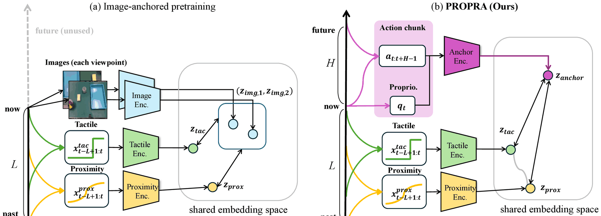

Sub recenzo
Memgvidata Ankrado de Fingropinta Sensado al Propriocepto kaj Proaktivaj Agoj por Imitada Lernado de Robotoj
Kaŝitaj pro duoble blinda recenzado.
arXiv (baldaŭ)/Kodo (baldaŭ)
static/videos/teaser.mp4
Fingropintaj sensiloj parolas nur eksplode: proksimeco ĝuste antaŭ la kontakto, palpo ĝuste poste. PROPRA ankras ĉiun el ili al io, kion la roboto ĉiam havas — ĝia nuna stato kaj la agoj, kiujn ĝi tuj plenumos.
Resumo
Imitada lernado de robotoj ofte dependas de eksteraj kameraoj, tamen lokajn interagajn indikojn — kiel proksimecon de objekto, komencon de kontakto kaj prenostaton — malfacilas observi apud la fingropintoj pro okludo kaj limigita tempa distingivo. Ni studas, kiel efike integri komplementan fingropintan sensadon en imitadan lernadon per premsentemaj palpaj kaj reflektaj proksimecaj sensiloj, kune kun antaŭtrejnitaj sensilaj kodiloj.
La du modalecoj donas informojn en malsamaj fazoj de la manipulado: proksimeca sensado estas informoriĉa antaŭ la kontakto, dum palpa sensado iĝas informoriĉa post la kontakto. Tamen, naive aldoni tiujn signalojn al politiko ne konstante plibonigas la rezulton kaj eĉ povas malsuperi nur-vidajn politikojn, kio sugestas, ke maldensajn, faz-dependajn sensilajn signalojn malfacilas ekspluati el limigitaj demonstraĵoj.
Tial ni proponas antaŭtrejnan metodon ankritan al propriocepto, PROpriocepta-kaj-PRoaktiva Ankrado (PROPRA), kiu sendepende vicigas la historion de ĉiu fingropinta sensilo kun proprioceptaj kaj agaj segmentoj. Tio donas kontinue disponeblan sensmotoran referencon, permesante ke ĉiu sensilo estu vicigita sendepende dum siaj informoriĉaj fazoj.
Eksperimentoj pri realmondaj manipuladaj taskoj montras, ke nia antaŭtrejna metodo plibonigas la mezajn sukcesprocentojn kompare kun nur-vidaj politikoj kaj kun bildankritaj antaŭtrejnaj bazlinioj. Analizo de la reprezentaĵoj krome montras, ke ĝi konservas pli riĉajn informojn pri antaŭkontaktaj statoj, ebligante pli efikan uzon de komplementa fingropinta sensado.
Metodo

La historio de ĉiu fingropinto — 0,5 s de 3 palpaj kaj 6 proksimecaj kanaloj — ricevas propran kodilon. La ankro estas la nuna pozo de la fina efektorilo kaj la malfermo de la prenilo, plus la sekvaj 10 agoj: difinita ĉe ĉiu paŝo, kaj bezonanta neniun kameraon. Kontrasta perdofunkcio tiras ĉiun sensilan enkorpigon al tiu ankro; la kodiloj poste eniras difuzan politikon kaj la ankro estas forlasita.
Rezultoj
Kvar taskoj sur UR5e, po 50 demonstraĵoj. PROPRA superas nur-vidajn politikojn kaj bildankritan antaŭtrejnadon laŭ meza sukcesprocento, kaj konservas pli da antaŭkontaktaj informoj en la proksimeca reprezentaĵo. La nombroj troviĝas en la artikolo.
Video
static/videos/supplementary.mp4
PickCup PickSponge MovePen OpenLid